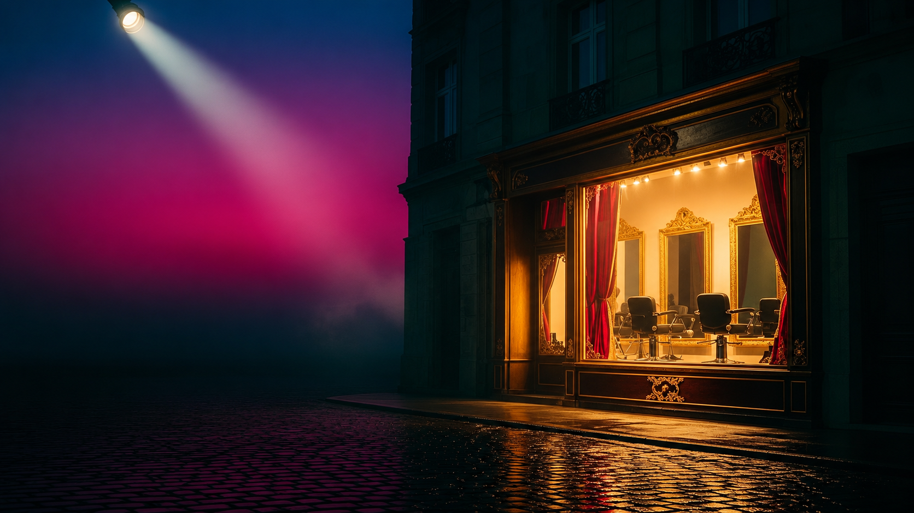
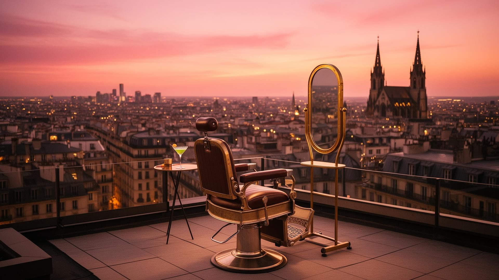
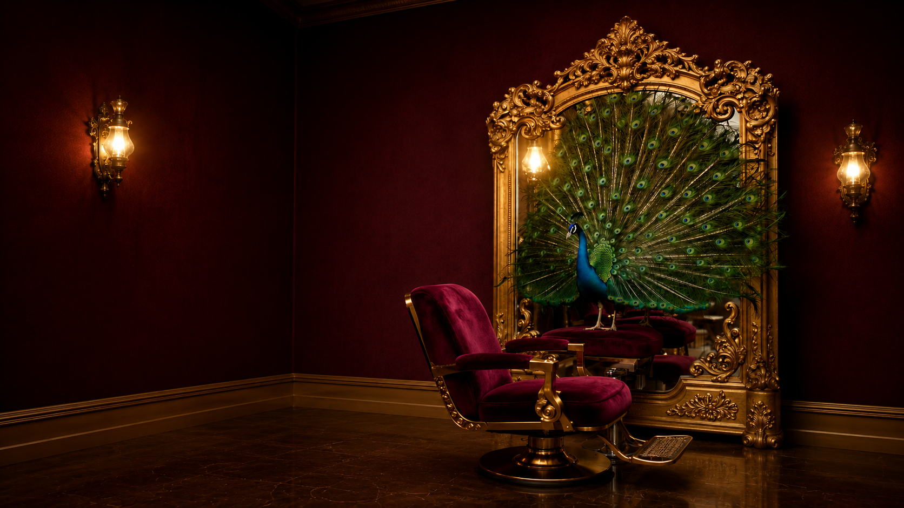
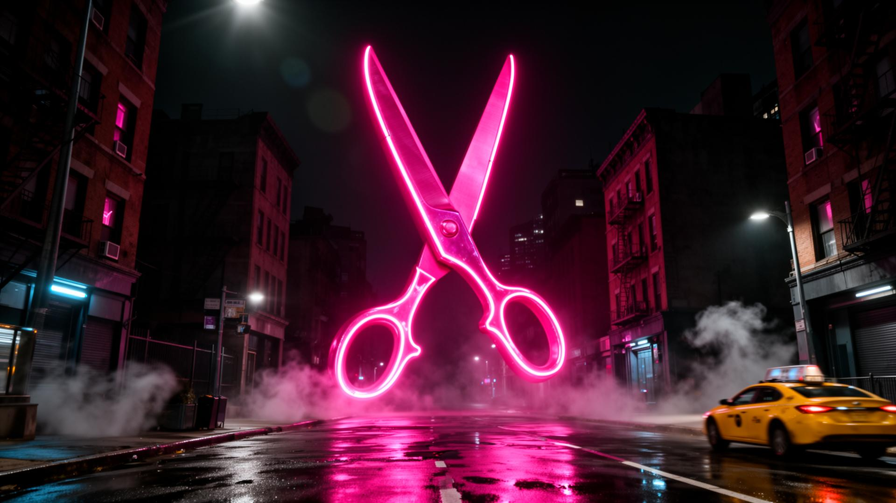

Treatwell
Smoova




Treatwell rekent schoonheidssalons in Nederland gemiddeld 25 tot 35% commissie per boeking. Reken hieronder uit wat dat jouw salon per jaar kost. Treatwell charges Dutch beauty salons an average of 25 to 35% commission per booking. Use the calculator below to see what that actually costs your salon per year.
Drie pakketten, één belofte: jouw klanten blijven van jou. Three plans, one promise: your customers stay yours.
+ €1.299 eenmalige setup + €1,299 one-time setup
+ €1.999 eenmalige setup + €1,999 one-time setup
+ €3.499 eenmalige setup + €3,499 one-time setup
Optioneel Branded photo pack vanaf €199 Brand reel €499 Marketingcampagne €499 Retention Engine €499 + €99/mnd Extra taal €299 + €19/mnd Optional Branded photo pack from €199 Brand reel €499 Marketing campaign €499 Retention Engine €499 + €99/mo Extra language €299 + €19/mo
20 minuten / vrijblijvend / geen verplichting 20 minutes / no commitment / no obligation
© 2026 Smoova B.V. · Alle rechten voorbehouden · Bijgewerkt © 2026 Smoova B.V. · All rights reserved · Updated
hi@smoova.studio